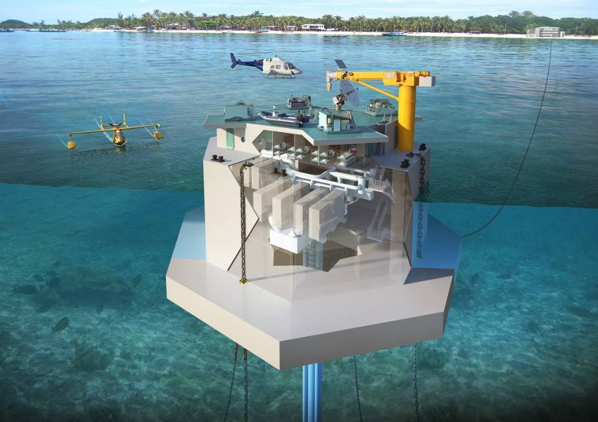

Activity 2 — Ocean Thermal Energy Conversion (OTEC)
Problem Statement
Activity 2: Develop the block diagram of an Ocean Thermal Energy Conversion (OTEC) system for electricity production and freshwater generation.

(Figure: Reference image for OTEC)
Overview
OTEC harnesses the small but continuous temperature difference between warm surface water and cold deep seawater to run a closed‑cycle Rankine engine, often using ammonia as the working fluid. Although thermal efficiency is low, the ocean provides vast heat reservoirs enabling 24/7 baseload electricity in tropical regions where ΔT is large and stable.
Source of energy
Solar heating warms the ocean surface while deep water remains cold. This natural thermal gradient stores low‑grade heat energy. By moving heat from warm to cold through a heat engine, a portion is converted to mechanical work and then to electricity.
Conversion process
Warm seawater vaporizes the working fluid in an evaporator. The high‑pressure vapor expands through a turbine coupled to a generator. Cold deep water condenses the vapor back to liquid in the condenser. A pump returns the fluid to the evaporator, closing the loop. Large water intakes/outputs manage flow while minimizing marine impacts.
Output / utilization
OTEC provides steady electrical output that can complement variable renewables. Some configurations integrate desalination (flash or MSF) using low‑grade heat, and support aquaculture or seawater air‑conditioning systems that utilize the cold‑water stream for cooling.
Real-world relevance
For island grids dependent on imported diesel, OTEC can reduce fuel exposure and offer round‑the‑clock clean power. Engineering focuses on durable deep‑water pipes, biofouling management, and environmental monitoring for nutrient upwelling and habitat effects.